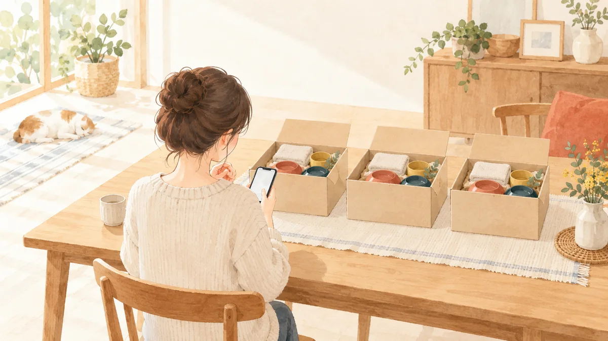

ふるさと納税サイトの選び方。ポイント付与が禁止された後、決済・申請・証明書の 5 項目で比べる

本記事にはアフィリエイト広告（PR）が含まれます。紹介した商品を購入されると、当サイトに報酬が入ることがあります。内容は運営者が調べて書いています。
ふるさと納税のポータルサイトは「どこがポイントを多く付けるか」で選ぶのが 2025 年 9 月までの定番でした。2025 年 10 月 1 日からは、ポータルサイトが寄付にポイントを付けることが総務省の告示で禁止され、楽天ふるさと納税の寄付も楽天ポイントの付与・買い回りの対象外になりました。この記事は、総務省の告示と Q&A、楽天・ふるさとチョイス・さとふる・ふるなび・au PAY・ANA の公式ページ、国税庁のページを 2026 年 10 月 8 日に読み、「何が変わったか」「残った違いは何か」「自分はどこを使うか」を整理したものです。制度の仕組みと上限の目安は親記事 ふるさと納税の始め方と返礼品の選び方 を先にご覧ください。
この記事でわかること・結論
- 2025 年 10 月 1 日から、寄付へのポイント付与は禁止です。 2024 年 6 月 28 日公布の総務省告示（令和 6 年総務省告示第 203 号）で、「寄附に伴って寄附者に経済的利益を提供する者を通じた募集」が指定基準に反するとされ、この規定は 2025 年 10 月 1 日以後に始まる指定期間から適用されました。楽天の通常ポイント 1%、au PAY の寄附特典 3.5%、ANA のマイル、さとふるマイポイント、ふるなびコインは、いずれも 2025 年 9 月 30 日の寄付分で終わっています。
- 返礼品と寄付額はどのサイトでも同じです。 2026 年 10 月 8 日に確認した都城市「国産豚肉切り落とし 5kg（うま味加工）」は、楽天・ふるさとチョイス・ふるなびの 3 サイトとも 16,000 円・250g×20 袋でした。違うのはレビュー件数（291 件・13 件・114 件）だけです。
- 残った違いは 5 つで、決め方は 3 つに絞れます。 決済手段（14 種類のふるさとチョイスから、カード＋銀行振込中心の楽天まで）、ワンストップ特例のオンライン申請（アプリ型か外部サービス型か）、寄附金控除に関する証明書（6 サイトとも国税庁の特定事業者ですが、XML の取り方と発行時期が違います）、寄付履歴の管理、掲載自治体数（楽天 1,737・ふるさとチョイス 1,788・au PAY 1,600 以上）です。楽天 ID で家計を管理している人は楽天、決済の種類や地域検索を重視する人はふるさとチョイス、アプリで申請まで完結させたい人はさとふる・ふるなび。どれを選んでも 1 つに絞ります。
- 制度の内容は 2024 年 6 月 28 日公布の総務省告示（令和 6 年総務省告示第 203 号）と、総務省「ふるさと納税に係る指定制度の運用についての Q&A」（令和 8 年 4 月 1 日付の最新版）にもとづきます。各サイトの機能は 2026 年 10 月 8 日に公式ページで確認した範囲で、各社が予告なく変更することがあります。
- ふるさと納税は税の前払いで、自己負担は年 2,000 円です。税金そのものが減る制度ではありません。
- 本記事にはアフィリエイトリンクが含まれます。紹介の基準は「広告掲載について」をご覧ください。
2025 年 10 月 1 日に何が変わったか（告示の条文と各社の対応）
根拠は 1 本の告示です。総務省は 2024 年 6 月 28 日、ふるさと納税の対象となる自治体の指定基準（平成 31 年総務省告示第 179 号）を改正し（令和 6 年総務省告示第 203 号）、「寄附に伴って寄附者に金銭その他の経済的利益を提供する者（第三者を通じて提供する者を含む）」を通じた募集を行わないこと、という項目（第 2 条第 1 号ロ(2)）を加えました。決済に伴って提供される通常の商取引相当のものだけが除かれます。附則で、この規定は「令和七年十月一日」以後に開始する期間に係る指定から適用するとされ、指定期間は毎年 10 月 1 日から翌年 9 月 30 日なので、2025 年 10 月 1 日の寄付分から効いています。
総務省の Q&A（10 月 1 日以降に適用される別紙 2 の問 7。9 月 30 日までの別紙 1 では問 1 の 3）は、何が禁止にあたるかを 3 つに分けて示しています。(1) ポータルサイト運営事業者等が直接・間接を問わず寄付者に付与するポイント等は、「マイル」「コイン」など名称を問わず該当する。(2) クレジット会社やキャッシュレス決済事業者が決済に伴って付けるポイントは原則として除外されるが、ふるさと納税の決済を対象に追加で付けるものや、ふるさと納税以外のサービスの利用状況に応じて追加で付けるものは除外されない。(3) ポイントサイト等を経由してポータルサイトに移って寄付した際に付くポイントも該当する。つまり「サイトのポイント」「ポイントサイト経由」「ふるさと納税だけ上乗せのカードポイント」は禁止、「通常の買い物と同じ条件のカードポイント」だけが残った、という整理です。
各社の対応を公式ページで確認すると、楽天ふるさと納税は 2025 年 9 月 1 日のお知らせで、10 月 1 日以降の寄付について「楽天市場のお買い物通常ポイント（100 円につき 1 ポイント）」「スーパー SALE、お買い物マラソン等の買いまわりカウントとポイント付与」「全ショップ対象キャンペーンのポイント付与」「SPU ポイント付与（楽天モバイル＋4 倍など 16 サービス）」を対象外とし、カード決済に伴うポイントは「引き続きカード会社から付与されます」としています。さとふる・ふるなび・au PAY・ANA も、下の表のとおり 2025 年 9 月 30 日の寄付分で付与を終えています。
2025 年 9 月以前と以後の比較表
| 項目 | 2025 年 9 月 30 日まで | 2025 年 10 月 1 日以後 | 根拠（2026 年 10 月 8 日確認） |
|---|---|---|---|
| 楽天ふるさと納税の楽天ポイント | 通常ポイント 100 円につき 1 ポイント、買いまわりカウント、SPU の対象 | 通常ポイント・買いまわり・全ショップ対象キャンペーン・SPU すべて対象外。カード会社の決済ポイントは継続 | 楽天「ポイント付与ルール変更のおしらせ」、楽天市場「【SPU】対象外」 |
| さとふるマイポイント | キャンペーンで寄付額に応じて付与 | 付与は終了。保有中のポイントは 10 月 1 日以降も寄付決済や交換に利用可 | さとふる お知らせ（2025 年 9 月 1 日） |
| ふるなびコイン | 寄付でコイン付与（有効期限は付与から 12 か月後の末日） | 寄付によるコイン付与は 9 月末で終了。10 月 1 日以降の寄付分はレビュー投稿でも付与対象外 | ふるなび「ふるなびコインについて」 |
| au PAY ふるさと納税の寄附特典 | 買い得メンバーズの寄附特典 3.5%（毎月 5,000 円以上の寄付、上限 350 ポイント） | 2025 年 10 月 1 日 9:59 で廃止 | au PAY マーケット お知らせ |
| ANA のふるさと納税のマイル | 寄付でマイル積算（2025 年 9 月 30 日 23:59 までの寄付完了分） | マイル積算は終了。カード会社のポイント交換は継続 | ANA のふるさと納税 FAQ |
| ポイントサイト経由の寄付 | サイトにより付与 | 禁止の対象（寄付に相当程度関連する経済的利益） | 総務省 Q&A 別紙 2 問 7 |
| クレジットカード・キャッシュレス決済のポイント | 各社の条件で付与 | 通常の買い物と同じ条件の分は継続。ふるさと納税だけに上乗せする分は禁止 | 総務省 Q&A 問 1 の 3、楽天のお知らせ |
| 貯めたポイントを寄付に使う | 可（サイトによる） | 変更なし。楽天ポイント・さとふるマイポイント・Ponta ポイントは引き続き利用可 | 楽天 FAQ、さとふる お知らせ、au FAQ |
| 自己負担 2,000 円・控除の上限・返礼品 3 割以下 | 変更なし。控除額は寄付額 − 2,000 円で、サイトによる差はない | 総務省「税金の控除について」、国税庁 No.1155 | |
| ワンストップ特例（5 自治体以内・翌年 1 月 10 日）と確定申告 | 変更なし | 総務省「ふるさと納税の流れ」 | |
この表から言えるのは、「どのサイトが得か」の差はなくなり、「どのサイトが手続きを楽にするか」の差だけが残った、ということです。10,000 円の寄付に対して 1% なら 100 ポイント、3.5% なら 350 ポイントの差だったものが 0 になった一方、申請書を出し忘れると控除そのものを受けられず、50,000 円の寄付なら 48,000 円の控除を失います（確定申告で救済できます）。比べる軸を「付与率」から「手続きの事故が起きにくいか」に移すのが、2025 年 10 月以降の選び方です。
残った違い: 主要 6 サイトの機能比較表
2026 年 10 月 8 日に各社の公式ガイド・FAQ・トップページで確認できた範囲です。「—」は公式ページで記載を確認できなかった項目で、無いという意味ではありません。利用できる決済手段は、どのサイトも自治体ごとに異なります。
| 楽天ふるさと納税 | ふるさとチョイス | さとふる | ふるなび | au PAY ふるさと納税 | ANA のふるさと納税 | |
|---|---|---|---|---|---|---|
| 掲載自治体数（公式表示） | 参加自治体数 1,737、品目数 1,003,800（2026 年 10 月 8 日時点のトップページ表示。品目数は容量違い・発送時期違いを個別に数えた値） | 1,788 自治体、お礼の品 76 万点以上（2024 年 10 月現在の「特長」ページ） | — | — | 1,600 自治体以上（2025 年 6 月現在のガイド） | — |
| 決済手段 | クレジットカードは全自治体・全返礼品で可。銀行振込（楽天口座決済）、楽天ポイント利用。自治体により Apple Pay など | 14 種類（クレジットカード、Amazon Pay、PayPay、d 払い、au PAY、楽天ペイ、メルペイ、ペイディ、PayPal、キャリア決済、ネットバンク、Pay-easy、コンビニ）。カード登録で 2 クリックの「ファスト寄付」 | 10 種類（クレジットカード、コンビニ、PayPay オンライン、Amazon Pay、楽天ペイ、メルペイ、ソフトバンクまとめて支払い、au PAY（auかんたん決済）、d 払い、Pay-easy） | クレジットカード 5 ブランド、ふるなびマネー、Amazon Pay、PayPay、楽天ペイ、d 払い、銀行振込・郵便振替など（2025 年 12 月 3 日時点） | au PAY（auかんたん決済）の通信料金合算、Ponta ポイント利用など | クレジットカード、ANA Pay、Amazon Pay、d 払い |
| 貯めたポイントで寄付 | 楽天ポイント利用可（ポイント分も控除計算上の寄付額に含む） | —（決済手段による） | さとふるマイポイントを寄付決済に利用可 | ふるなびマネー（決済サービス） | Ponta ポイント（au PAY マーケット限定を含む）を利用可 | ANA Pay 残高（マイルをチャージ）で寄付可 |
| ワンストップ特例のオンライン申請 | 寄付履歴一覧から外部サービス（自治体マイページ・ふるまど）へ。マイナンバーカード必要、2022 年寄付分から、対応自治体のみ。期限は翌年 1 月 10 日 23:59 | 公式アプリ「チョイスアプリ ワンストップ申請」。マイナンバーカード＋NFC 対応スマホ。自治体により「ふるまど」「自治体マイページ」も | 「さとふるアプリ de ワンストップ申請」。複数自治体をまとめて申請可（アプリ v3.35.0 以上）。期限は翌年 1 月 10 日 | 「ふるなびワンストップ e 申請」（ふるなびアプリ）。同一自治体の寄付は 1 回 10 件まで | 外部サービス（自治体マイページ・ふるまど）対応の自治体のみ。返礼品一覧で「オンラインワンストップ申請」対象に絞り込める。ガイドの提出期限は翌年 1 月 10 日 | 外部サービス（自治体マイページ、ふるまど・IAM）。マイナンバーカード必要、自治体により対応が異なる |
| 寄附金控除に関する証明書（確定申告用） | XML 発行、マイナポータル連携可。翌年 1 月上旬から即時発行、過去 5 年分。紙の発行・郵送はなし | 「チョイススマート確定申告」で XML を即時発行（ブラウザのみ、アプリ不可）。マイナポータル連携可 | 電子発行（XML）と書面発行（郵送）の両方。翌年 1 月中旬頃から順次発行、電子は翌年以降自動発行 | XML を翌年 1 月 10 日以降に自動発行、マイページからダウンロード。マイナポータル連携可 | 国税庁の特定事業者一覧に掲載（表示番号 AU）。発行手順は公式ガイドに記載がなく、ガイドは自治体発行の寄附金受領証明書の保管を案内 | XML を e-私書箱に格納、確定申告書等作成コーナーにアップロード。2025 年分は 2026 年 1 月 6 日から順次発行 |
| 寄付履歴の管理 | マイページの寄付履歴一覧。楽天以外での寄付も手動登録でき、かんたん・詳細版のシミュレーターあり | マイページ。証明書に載るのはログインして寄付した申込みだけ | アプリの「控除管理」画面で未申請の件数を表示 | マイページの「控除手続き」から申請。ログインせずに寄付した分は証明書の対象外 | au PAY マーケットの ID で管理 | マイページの寄付履歴。証明書には申込日ではなく決済日が反映され、1 月 1 日 0 時以降に決済が完了した分は翌年分になる |
出典は末尾の「出典」節に列挙した各社の公式ガイド・FAQ（2026 年 10 月 8 日取得）です。決済手段の多さはふるさとチョイス 14 種類、さとふる 10 種類、楽天はクレジットカードと銀行振込が中心です。ワンストップのオンライン申請は「アプリ型」（ふるさとチョイス・さとふる・ふるなび）と「外部サービス型」（楽天・ANA）に分かれ、どちらもマイナンバーカードが要ります。寄附金控除に関する証明書は、国税庁が指定する特定事業者の一覧（令和 8 年 6 月 16 日現在）にふるさとチョイス・さとふる・ふるなび・楽天ふるさと納税のほか、ANA のふるさと納税・au PAY ふるさと納税も載っており、6 サイトとも発行できる事業者です。XML 形式のデータを e-Tax に添付するか、マイナポータル連携で自動入力します（国税庁は PDF 形式を認めていません）。紙で欲しい人は、今回確認した範囲ではさとふるだけが郵送に対応し、楽天は紙の発行をしていません。
楽天ふるさと納税で
楽天 ID で申込みができ、マイページの寄付履歴一覧で寄付をまとめて管理できます。2025 年 10 月 1 日以降、寄付への楽天ポイント付与と買い回りカウントは対象外です。
同じ返礼品を 3 サイトで並べた実例
「サイトで寄付額が違うのでは」という疑問に、2026 年 10 月 8 日に実際のページを開いて答えます。宮崎県都城市の「国産豚肉切り落とし 5kg（うま味加工）」（自治体の返礼品番号 36-009、提供事業者 株式会社ミートクリエイト）を、楽天ふるさと納税・ふるさとチョイス・ふるなびで比べました。
| 楽天ふるさと納税 | ふるさとチョイス | ふるなび | |
|---|---|---|---|
| 寄付額 | 16,000 円 | 16,000 円 | 16,000 円 |
| 内容量 | 国産豚 切り落とし 250g×20 袋（昆布だし加工） | 国産豚 切り落とし 250g×20 袋 うま味加工 昆布だし | 国産豚 切り落とし 250g×20 袋 |
| 賞味期限 | 加工日より冷凍保存で 90 日 | 加工日より冷凍保存で 90 日 | 加工日より冷凍保存で 90 日 |
| レビュー | 291 件・総合評価 4.46 | 13 件 | 114 件・評価 4.5 |
| ページ上の申請機能 | 注文時に「不要（ワンストップオンライン）」「必要（ワンストップ特例申請用）」「不要（電子データにて確定申告）」「必要（確定申告用）」から選択 | ワンストップオンライン申請 ○（チョイスアプリ、ふるまど対応） | ワンストップ特例オンライン申請対応 |
出典: 楽天ふるさと納税 都城市ページ（商品番号 36-009）、ふるさとチョイス（お礼の品 ID 6230118）、ふるなび（pid 1265644）、いずれも 2026 年 10 月 8 日取得。寄付額・内容量・賞味期限は 3 サイトで同じで、差はレビュー件数（291 件・13 件・114 件）と申込み画面の作りだけでした。一方、同じ都城市の豚切り落としでも、さとふるの一覧には「【さとふる限定】宮崎県産豚切り落とし 5.1kg（小口ジッパー袋入り）」19,000 円、「宮崎県産豚切り落とし 5.0kg（真空）」22,000 円が並び、36-009 と同じ名前の返礼品はありませんでした（同日、さとふる 都城市 豚肉一覧）。「同じ返礼品なら同じ寄付額」「○○限定品は別の品なので、量と寄付額を自分で比べる」の 2 つを覚えておけば、サイトの違いで損をすることはありません。
判断の分岐: あなたはどのサイトか
- 楽天 ID で家計の買い物を管理している人: 楽天ふるさと納税。寄付が購入履歴とマイページの寄付履歴一覧に残り、楽天以外の寄付も手動で足せます。ポイントは付きませんが（2025 年 10 月 1 日以降は通常ポイント・買い回り・SPU とも対象外）、楽天ポイントで払った分も寄付額に含まれ、管理の一元化という利点はそのままです。
- クレジットカードを使いたくない、PayPay・d 払い・コンビニで払いたい人: ふるさとチョイス（14 種類）かさとふる（10 種類）。楽天はクレジットカードと銀行振込が中心です。コンビニ・Pay-easy は入金日が基準になるので、12 月 31 日の寄付には向きません。
- 地域や使い道から探したい人、掲載数を重視する人: ふるさとチョイス（1,788 自治体、2024 年 10 月現在）か楽天（1,737 自治体、2026 年 10 月 8 日時点）。au PAY は 1,600 自治体以上（2025 年 6 月現在）です。
- 会社員で、スマホのアプリだけで申請まで終えたい人: さとふる（複数自治体をまとめて申請）、ふるなび、ふるさとチョイスのアプリ。マイナンバーカードと読み取り対応スマホが前提で、無い人はどのサイトでも紙の申請書を翌年 1 月 10 日必着で郵送します。
- 医療費控除や住宅ローン控除 1 年目で確定申告する人: 6 サイトはいずれも国税庁の特定事業者なので、XML の取り方が公式ガイドで分かるサイト（楽天・ふるさとチョイス・さとふる・ふるなび・ANA）に統一します。紙で税理士に渡したい人はさとふるの書面発行（申込みから約 2 週間）が使えます。
- au・UQ の利用者で通信料金と合算したい人、Ponta ポイントを使いたい人: au PAY ふるさと納税。ただしオンライン申請は自治体マイページ・ふるまどに対応した自治体に限られ、寄附金控除に関する証明書の発行手順は公式ガイドに載っていないので、申請まで同じサイトの案内で済ませたい人は他の 5 サイトのほうが手順が揃っています。
- 2 つ以上のサイトを使っている人: 1 つに絞ります。ワンストップ特例の 5 自治体と控除の上限は、サイトをまたいだ年間合計で数えます。
迷ったら「確定申告をするか」で決めるのが早道です。する人は XML 証明書の発行時期（楽天は翌年 1 月上旬から即時、ふるさとチョイスは申込みからすぐ、ふるなびは 1 月 10 日以降に自動、さとふるは 1 月中旬から順次）で、しない人はオンライン申請の形（アプリ型か外部サービス型か）で選びます。
申込みから控除手続きまでの 7 手順
- サイトを 1 つ決め、会員情報を住民票どおりにする。 楽天は注文者情報が住民票と違うと控除申請ができず、会員情報と注文者情報が一致しないと電子データ版の証明書も使えません。ふるさとチョイスはカード名義と寄付者名義が違うと控除対象外です。つまずく点: 旧住所のまま、配偶者名義のカード、の 2 つが定番です。
- 上限の 8〜9 割を年間予算にして、寄付先を 5 自治体以内に収める計画を立てる。 上限の目安表と計算式は親記事にあります。つまずく点: 同じ自治体に 2 回寄付しても 1 自治体ですが、別サイトで寄付した分も合算で数えます。
- 申込み画面で「控除手続きの種類」を選ぶ。 楽天の都城市ページでは「不要（ワンストップオンライン）」「必要（ワンストップ特例申請用）」「不要（電子データにて確定申告）」「必要（確定申告用）」の 4 択が必須項目です。つまずく点: ワンストップ特例を使うのに「不要（電子データにて確定申告）」を選ぶと申請書が届きません。
- 本人名義の決済で支払う。 年末はクレジットカードが安全です。さとふるは 2025 年 9 月 30 日の付与終了時に「コンビニ決済・Pay-easy は入金手続きの完了日で判定」と案内しており、入金が翌日にずれると寄付日もずれる決済手段があることが分かります。つまずく点: 12 月 30 日にコンビニ払いを選んで翌年に入金すると、翌年の寄付として扱われる可能性があります。楽天は「12 月 31 日 23 時 59 分までに寄付申込みが完了している必要があります」と案内しています（楽天 FAQ）。年末はクレジットカードで 12 月中旬までに済ませます。
- 寄付履歴で合計額と自治体数を確認する。 楽天はマイページの寄付履歴一覧、さとふるはアプリの「控除管理」画面で未申請の件数が出ます。つまずく点: 楽天で「楽天以外での寄付状況」を登録しないと、他サイトの分は合計に入りません。
- ワンストップ特例の人は翌年 1 月 10 日までに申請する。 オンラインは楽天が 1 月 10 日 23:59、さとふるも「オンラインで行う場合も申請期限は寄付した翌年の 1/10 まで」です。紙は各自治体に 1 月 10 日必着。つまずく点: ふるなびの e 申請は同一自治体 10 件までを 1 回で送るので、11 件以上なら 2 回に分けます。オンラインで申請済みなら、後から届いた紙の申請書は出さなくて構いません（ふるさとチョイス FAQ）。
- 確定申告の人は証明書を XML で取り、翌年 3 月 15 日までに申告する。 マイナポータル連携に対応するサイトなら、確定申告書等作成コーナーで証明書データが自動反映されます（国税庁）。つまずく点: ふるさとチョイスの証明書はアプリからは出せずブラウザのみ、楽天の XML は Chrome では表示できません（中身を見なくても e-Tax に添付できます）。
よくある失敗 5 つと回避策
- 2 つのサイトで 3 自治体ずつ寄付して、6 自治体になった。 6 自治体以上に寄付した時点でワンストップ特例は使えず、確定申告をすると申請済みの分も無効になります（総務省「ふるさと納税の流れ」、国税庁 No.1155）。回避策: サイトを 1 つにし、寄付履歴一覧で自治体数を数えてから申込みます。すでに 6 自治体なら全寄付分を確定申告に切り替えます。
- お買い物マラソン中に楽天ふるさと納税で寄付し、買い回りに数えられると思っていた。 楽天市場のヘルプは「楽天ふるさと納税（2025 年 10 月 1 日(水)より対象外）」をキャンペーン対象外の返礼品として明記しています。ショップ数にも数えられず、ポイントも付きません。回避策: 寄付をマラソンの日程に合わせる理由はなくなったので、年末の混雑を避けて春や秋に申込みます。
- 2025 年 9 月以前の比較記事を見て「ポイント還元率の高いサイト」を探した。 2025 年 10 月 1 日以降、どのポータルサイトも寄付にポイントを付けていません。「○% 還元」を今も掲げるページは情報が古いか、告示の禁止対象にあたる可能性があります。回避策: 付与率ではなく決済・申請・証明書で比べます。
- ログインせずに寄付して、寄附金控除に関する証明書に載らなかった。 ふるなびは「ログインした状態で寄附した申し込みのみが対象」で事後登録はできず、ふるさとチョイスも会員登録名と完全一致しない申込みは対象外です。回避策: 証明書を使う予定の人は、会員でログインし、氏名を会員情報と同じ表記で申込みます。載らなかった分は自治体の寄附金受領証明書で申告します。
- 家族名義のカードやポイントサイト経由で寄付した。 ふるさとチョイスはカード名義と寄付者名義が違うと控除対象外と明記しています。ポイントサイト経由で付くポイントは総務省 Q&A で禁止の対象とされており、受け取れる前提で動くと期待が外れます。回避策: 寄付者本人名義の決済だけを使い、共働きなら夫婦それぞれの会員 ID で寄付します。
よくある質問
楽天ふるさと納税で楽天ポイントは付きますか？
貯まっているポイントを寄付の支払いに使えますか？
クレジットカードの決済ポイントは付きますか？
返礼品はサイトによって中身や寄付額が違いますか？
どのサイトで申込んでも控除額は同じですか？
アプリは必要ですか？
複数のサイトを使い分けても問題ありませんか？
出典
いずれも 2026 年 10 月 8 日に取得。各社の機能・掲載数は変わることがあるので、申込み前に各ページでご確認ください。総務省のページは文字コードの関係でブラウザによっては表示が崩れることがあります。
- 総務省 令和 6 年総務省告示第 203 号（令和 6 年 6 月 28 日。附則にロ(2) の適用日「令和七年十月一日」）
- 総務省「指定制度の運用についての Q&A について（通知）」令和 6 年 6 月 28 日 総税市第 65 号
- 総務省「指定制度の運用についての Q&A について（通知）」令和 8 年 4 月 1 日 総税市第 33 号（最新版。10 月 1 日以降は別紙 2 の問 7、9 月 30 日までは別紙 1 の問 1 の 3）
- 総務省 ふるさと納税ポータルサイト「関連資料」
- 総務省「令和 7 年度以前の告示・通知等」
- 総務省「税金の控除について」
- 総務省「ふるさと納税の流れ」（5 団体以内、6 団体以上は確定申告）
- 国税庁「ふるさと納税に係る寄附金控除に関する証明書等について」
- 国税庁「国税庁長官が指定した特定事業者（令和 8 年 6 月 16 日現在）」
- 国税庁 タックスアンサー No.1155「ふるさと納税(寄附金控除)」
- 楽天ふるさと納税「ポイント付与ルール変更のおしらせ」
- 楽天ふるさと納税 トップページ（参加自治体数・品目数）
- 楽天ふるさと納税「よくある質問（FAQ）」
- 楽天ふるさと納税 FAQ「楽天ふるさと納税のご利用について」（ポイントでの寄付も寄付金額に含まれる）
- 楽天ふるさと納税「寄付の流れ」（注文者情報が住民票と異なると控除申請ができない）
- 楽天ふるさと納税「税金控除の手続きガイド」
- 楽天ふるさと納税「ワンストップ特例制度 オンライン申請手順」
- 楽天ふるさと納税「寄附金控除に関する証明書（電子データ）での申請手順」
- 楽天市場ヘルプ「キャンペーンに関する注意事項」（楽天ふるさと納税は 2025 年 10 月 1 日より対象外）
- 楽天市場ヘルプ「【SPU】対象外」（楽天ふるさと納税は 2025 年 10 月 1 日より対象外）
- 楽天ふるさと納税 宮崎県都城市「国産豚肉切り落とし 5kg（うま味加工）」（商品番号 36-009）
- ふるさとチョイス「ふるさとチョイスの特長」
- ふるさとチョイス「選べるお支払い方法」
- ふるさとチョイス「オンラインでワンストップ特例申請」
- ふるさとチョイス「チョイススマート確定申告」
- ふるさとチョイス 宮崎県都城市「国産豚肉切り落とし 5Kg（うま味加工）〔36-009〕」
- さとふる「決済方法は何がありますか。」
- さとふる「さとふるアプリ de ワンストップ申請」
- さとふる「寄付金控除に関する証明書 発行・発送サービス」
- さとふる「【重要】2025 年 9 月 30 日の寄付はお早めに！今後のさとふるマイポイントについて」
- さとふる 宮崎県都城市 豚肉（精肉）のお礼品一覧
- ふるなび「選べる便利なお支払い方法」
- ふるなび「ふるなびワンストップ e 申請の申請手順」
- ふるなび「寄附金控除に関する証明書 発行サービスのご案内」
- ふるなび「ふるなびコインについて」
- ふるなび 宮崎県都城市「国産 豚肉切り落とし 5Kg（うま味加工）〔36-009〕」
- au PAY ふるさと納税「ふるさと納税とは？」
- au PAY マーケット「重要：買い得メンバーズ特典変更のお知らせ」（寄附特典 3.5% の廃止）
- au「au PAY ふるさと納税で寄附する際にポイントを利用する方法」
- ANA のふるさと納税「よくある質問」
- ANA のふるさと納税「ワンストップ特例申請オンラインサービス」
- ANA のふるさと納税「初めてでも安心！簡単 ANA のふるさと納税」